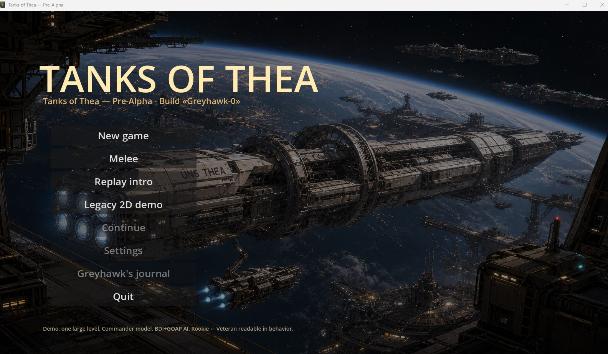
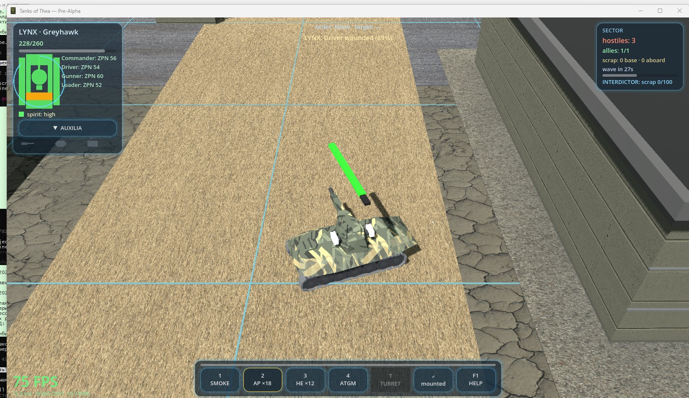
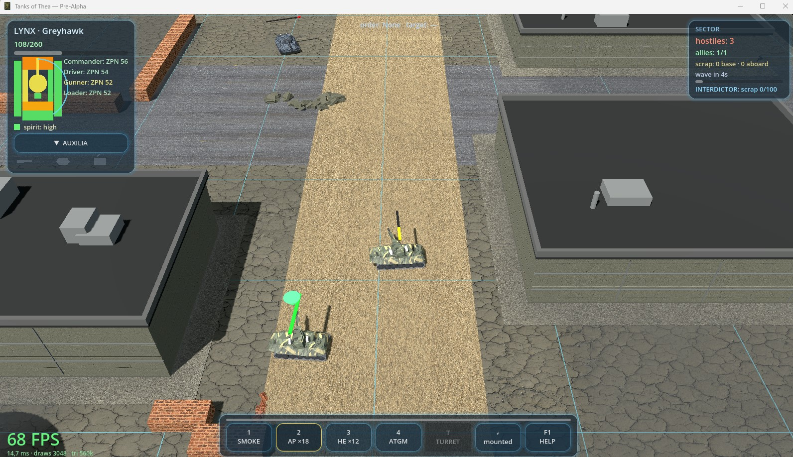
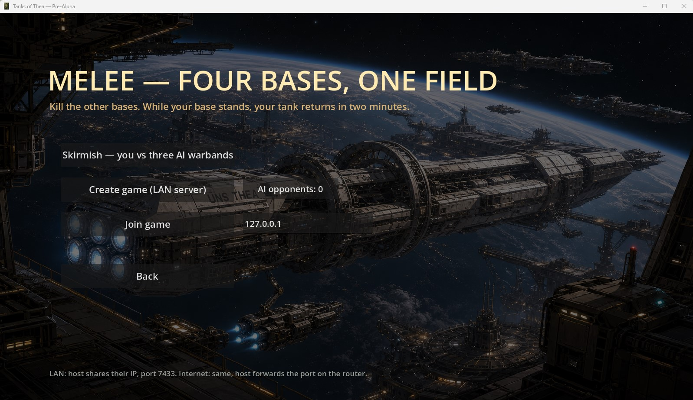

Make decisions with incomplete information and no perfect answer waiting in a tooltip.

Playable alpha / Windows / free or pay what you want
Tanks
of Thea
You do not drive the tank.
You command the people inside it.
01 / The war
The last unit
still answering.
Thea became home when Earth stopped answering. Now that home is tearing itself apart.
Colonel Alexander Greyhawk commands an experimental Concordian armoured unit. A sudden Vanguard assault leaves his people as the last force in the region capable of hitting back.
For Greyhawk, the war is not an arrow on a strategic map. His family is trapped in the occupied capital — and they fit the profile that sends people into the Vanguard’s concentration camps.

02 / Indirect command
Every click
is an order.
You are the commander. Not the gearbox. Not the gun breech. Not a camera welded to forty tonnes of steel.
Tell the driver where to move. Give the gunner a target. Choose ammunition. Hold the turret on an azimuth. Leave the tank when the situation demands it. The crew carries out the work through its own skills, condition and judgement.
Allied armour, artillery and support units are commanded through contextual orders. Then their own tactical AI takes over. You give intent. They find a way — or fail like living soldiers, not obedient cursors.
03 / RURK under the armour
Steel has stats.
People have stats.
Both can break.
Every person and every vehicle exists inside the same RURK-powered world.
Drivers, gunners and commanders are not decorative crew slots. Their skills shape movement, detection, fire control, recovery and survival. Vehicles have armour zones, ammunition, systems and damage that does not politely disappear between scenes.
Crew spirit can hold, strain or collapse. Rookie crews hesitate, misread and panic. Veterans remember, anticipate, choose cover and pursue a wounded enemy. The difference is not a larger health bar. It is behaviour.
Explore the RURK system →04 / One road through the war
A campaign.
Not a content treadmill.
A continuous authored story, carried by illustrated sequences and role-playing scenes where choices change people, machines, relationships and what survives the next battle.
Wounds, crew losses, battered armour and broken trust travel with the unit.
Visual-novel choices do not decorate the battle. They decide why the battle matters.
05 / Inside this alpha
Four ways into the machine.
3D single-player
The command model, crew behaviour, tactical AI, support assets and destructible battlefield in the current playable build.
Melee
A direct skirmish mode for getting into the steel, testing the systems and making the battlefield ugly fast.
LAN multiplayer
Host or join a local battle. It is early, blunt and already alive.
The original 2D prototype
The first working ancestor is preserved inside the build: proof of where the game began and how far it has moved.


06 / First public gameplay reveal
No cinematic alibi.
Watch the build.
Single-player. Melee. LAN multiplayer. The 2D prototype. One unhidden alpha, shown in English by the game’s creator.
07 / Alpha means alpha
The build is live.
The war is not finished.
This is an in-development build: systems will change, presentation will sharpen and things may break loudly. Download it for free, pay what you want if you want the furnace hotter, and tell us what survived contact with you.
Play Tanks of Thea08 / Publishers & investors
This is what we do
before funding.
The public alpha is not a promise. It is the thing already moving.
Give us a real production runway and we turn this brutal working proof into the full campaign: more cities, deeper role-playing, stronger art, harder consequences and a road to the occupied capital worth bleeding for.
We are ready to talk to publishers, investors and partners who understand that a dangerous game is better than a safe deck.